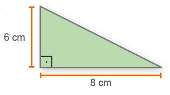
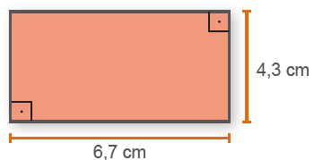
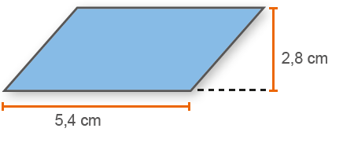
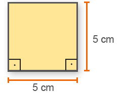
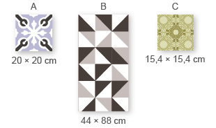
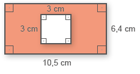
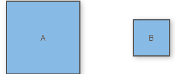
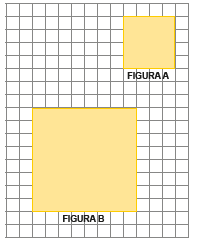
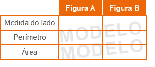
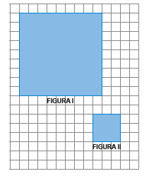

CAPÍTULO 3 - Área de alguns polígonos
Área do quadrado
Na casa de Júlia há um quintal, no qual ela fará uma horta quadrada com 5 metros de lado conforme mostra a ilustração ao lado.
Qual será a área ocupada por essa horta?

1. Troque ideias com um colega e expliquem como vocês fariam para calcular a área da região ocupada pela horta.

Agora, vejamos o cálculo da área dessa região quadrada.
Vamos representar a horta por meio de um desenho indicando as suas medidas.
Por meio do desenho, podemos perceber que em um quadrado de 5 m de lado cabem 25 quadradinhos de 1 m². Logo, sua área é igual a 25 m².
Para calcularmos a área de um quadrado basta multiplicarmos a medida de seus lados.
A = 5 ∙ 5 = 25 m²
Para calcularmos a área de um quadrado basta multiplicarmos as medidas dos seus lados ( ℓ ).

A = ℓ ∙ ℓ = ℓ2
UNIDADE 7 - CAPÍTULO 3
259
Área do retângulo

Reinaldo Rosa/Acervo da Editora
Um terreno retangular que está à venda tem 12 m de frente por 18 m de fundo. Sabendo-se que o metro quadrado custa R$ 650,00, qual o valor desse terreno?
1. Troque ideias com um colega e expliquem como vocês fariam para calcular o valor desse terreno.
Agora, vejamos o cálculo da área dessa região retangular.
Vamos representar esse terreno por meio de um desenho e indicar as suas medidas para calcular a sua área.
Note que em sua superfície cabem 216 quadradinhos de 1 m de lado. Logo sua área é igual a 216 m2.
Também podemos calcular a área de uma região retangular multiplicando as medidas dos seus lados.
A = 18 ∙ 12 = 216 m²
Agora que sabemos a área do terreno, podemos calcular o seu valor.
Valor total: 216 ∙ 650 = 140 400
Portanto, esse terreno custa R$ 140.400,00.
Em um retângulo, chamaremos as medidas dos seus lados de base (b) e altura (h). Para calcularmos a área de um retângulo, multiplicamos a medida da base pela medida da altura.

A = b ∙ h
260
UNIDADE 7 - CAPÍTULO 3
Área do paralelogramo
Utilizando o conceito de área de um retângulo que acabamos de estudar, vamos verificar como calcular a área de um paralelogramo.
Observe as figuras a seguir.

Na figura 1 temos representado um paralelogramo. Note que podemos transformar esse paralelogramo em um retângulo recortando o triângulo e en-caixando-o na outra extremidade do paralelogramo. Ao transformarmos a figura 1 na figura 2 a área inicial não se altera. Por isso, para calcularmos a área de um paralelogramo, utilizamos o mesmo raciocínio do cálculo da área do retângulo. Conhecendo-se a medida da base e a medida da altura do paralelogramo é possível calcular a sua área.
Observe o cálculo da área do paralelogramo a seguir.

A = 6,2 ∙ 3,1 = 19,22 cm²
Para calcularmos a área de um paralelogramo multiplicamos a medida da base pela medida da altura.

A = b ∙ h
UNIDADE 7 - CAPÍTULO 3
261
Área do triângulo
Utilizando os conceitos de área do retângulo e do paralelogramo, estuda-remos agora como calcular a área de um triângulo.
Observe as figuras a seguir:

Na figura 1 temos um retângulo que foi dividido em dois triângulos retângulos congruentes.
Na figura 2 temos um paralelogramo que foi dividido em dois triângulos congruentes.
Note que em ambos os casos a área dos triângulos corresponde à metade da área dos polígonos dados.
Dessa forma, conhecendo-se a medida da base e da altura de um triângulo, é possível calcularmos a sua área. Vejamos um exemplo.

Atenção!
A área de um triângulo corresponde à metade da área de um paralelogramo.
![Três triângulos. O primeiro é um triângulo retângulo e amarelo. Uma linha na vertical à esquerda com a letra h e outra linha na base com a letra b, demonstram que a base é maior que a altura. O segundo é um triângulo ocutângulo laranja. No centro dele, do vértice à base, uma linha tracejada com a letra h ao lado. Na base dele, a letra b. O terceiro é um triângulo obtusângulo azul. O vértice está virado para baixo e o ângulo da parte de cima é maior que a base indicada abaixo do triângulo com a letra b. À direita do triângulo, uma linha tracejada com a letra h.](../../resources/images/trifd.PNG)
262
UNIDADE 7 - CAPÍTULO 3
ENCONTRE SOLUÇÕES
1. Em seu caderno, calcule a área dos polígonos a seguir.
a)
b)
c)
d)
2. Um quadrado tem área igual a 196 cm². Qual a medida do lado desse quadrado?
3. Observe a planta do apartamento abaixo.

Reinaldo Rosa/Acervo da Editora
► Em todos os cômodos as medidas estão indicadas em metros. Em seu caderno, determine a área dos seguintes cômodos:
a) cozinha;
b) home-office;
c) suíte 1;
d) lavabo;
e) closet;
f) suíte máster.
UNIDADE 7 - CAPÍTULO 3
263
4. Observe a medida dos lados de alguns revestimentos para paredes.
► Em seu caderno, determine a área de cada revestimento.
5. No caderno, calcule a área da região colorida.
6. Marcela quer pintar uma parede de seu apartamento que mede 5,7 m por 3 m. Sabendo que o pintor cobra R$ 9,30 por metro quadrado pintado, quanto Marcela irá gastar contratando esse pintor?
7. Com o auxílio de uma régua, meça a medida dos lados dos quadrados a seguir.
► Agora, oralmente, verifique quais das sentenças são verdadeiras.
a) A medida do lado do quadrado A é o dobro da medida do lado do quadrado B.
b) O perímetro do quadrado B é igual a metade da medida do perímetro do quadrado A.
c) A área do quadrado A é o dobro da área do quadrado B.
8. Na malha quadrangular a seguir temos desenhados dois quadrados. Observe esses dois polígonos e depois responda às questões em seu caderno.
a) Podemos afirmar que a figura B é uma ampliação da figura A?
b) Considerando o lado de cada quadradinho como uma unidade de medida de comprimento (u.c.), quanto mede o lado de cada quadrado?
c) Qual o perímetro de cada quadrado?
d) Qual a área de cada quadrado?
e) Organize as medidas que você encontrou em uma tabela, conforme modelo abaixo.
► Comparando as medidas encontradas para as medidas dos lados, dos perímetros e das áreas, o que podemos observar?
264
UNIDADE 7 - CAPÍTULO 3
9. Na malha quadrangular a seguir, a figura II é uma redução da figura I.
a) Em seu caderno, copie a tabela abaixo e complete com as medidas que estão sendo solicitadas, considerando cada lado do quadradinho como uma unidade de medida de comprimento.

b) Comparando as medidas encontradas dos lados, dos perímetros e das áreas, o que podemos observar?
10. A seguir temos uma planta baixa de um apartamento. Observe:

a) Troque ideias com seu colega e descrevam, em seus cadernos, quais são os cômodos que compõem o apartamento.
b) Usando uma folha de papel quadriculado, desenhem a planta baixa desse apartamento e façam sugestões de possíveis medidas para as regiões internas do apartamento. Lembrem-se que as medidas devem respeitar a proporcionalidade entre os cômodos.
11. Usando uma folha de papel quadriculado, observe a casa em que você mora e desenhe uma planta baixa, indicando os cômodos que a compõem. Com o auxílio de uma trena, indique as medidas aproximadas das paredes de cada um dos aposentos.
12. (OBM) A figura a seguir representa um Tangram, quebra-cabeças chinês formado por 5 triângulos, 1 paralelogramo e 1 quadrado. Sabendo que a área do Tangram a seguir é 64 cm2, qual é a área, em cm2, da região sombreada?


a) 7,6
b) 8
c) 10,6
d) 12
e) 21,3
13. (OBMEP) A figura é formada por dois quadrados, um de lado 8 cm e outro de lado 6 cm. Qual é a área da região cinza?

a) 44 m²
b) 46 cm²
c) 48 cm²
d) 50 cm²
e) 56 cm²
UNIDADE 7 - CAPÍTULO 3
265